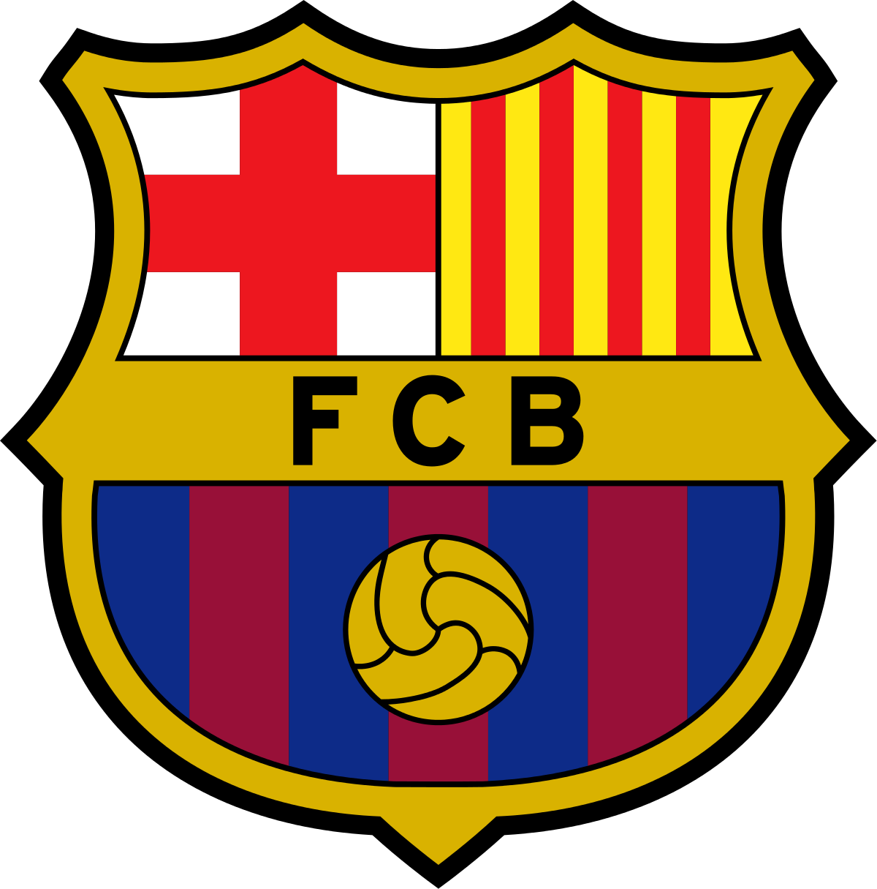
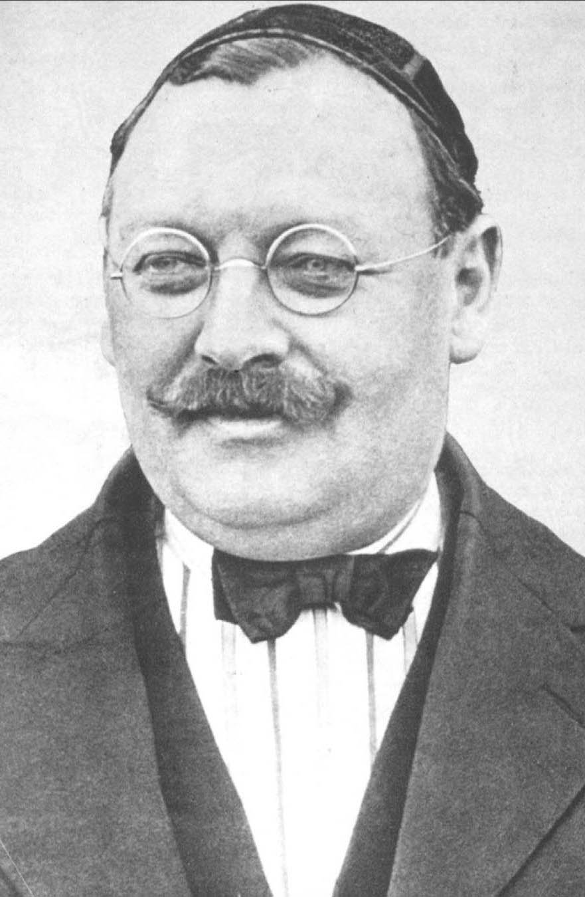
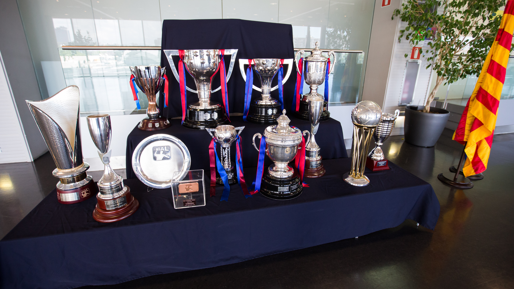

FC Barcelona

Vuodesta 1899
Historia
Sveitsiläinen liikemies Hans ”Joan” Gamper laittoi kesällä 1899 katalonialaiseen urheilulehteen ilmoituksen aikeistaan perustaa jalkapalloseuran Barcelonaan. Gamper oli jalkapallointoilija ja oli aikanaan itsekin pelannut Zürichissa. Gamperia ei huolettanut seuran perustamisessa edes se, että jalkapallo oli lajina tuohon aikaan lähes tuntematonta Barcelonassa. Niinpä Futbol Club Barcelona perustettiin 28. marraskuuta 1899.

Saavutukset

Kansainväliset kilpailut
Euroopan cupin ja Mestarien liigan mestaruudet, 5: 1991–1992, 2005–2006, 2008–2009, 2010–2011, 2014–2015
Messucupin mestaruudet, 3: 1955–1958, 1958–1960, 1965–1966
Cup-voittajien cupin mestaruudet, 4: 1978–1979, 1981–1982, 1988–1989, 1996–1997
UEFA Super Cupin mestaruudet, 5: 1992, 1997, 2009, 2011, 2015
Seurajoukkueiden maailmanmestaruus, 3: 2009, 2011, 2015
Copa latinan mestaruudet, 2: 1948–1949, 1950–1951
Kansalliset kilpailut
Espanjan pääsarjan mestaruudet, 26: 1928–1929, 1944–1945, 1947–1948, 1948–1949, 1951–1952, 1952–1953, 1958–1959, 1959–1960, 1973–1974, 1984–1985, 1990–1991, 1991–1992, 1992–1993, 1993–1994, 1997–1998, 1998–1999, 2004–2005, 2005–2006, 2008–2009, 2009–2010, 2010–2011, 2012–2013, 2014–2015, 2015–2016, 2017–2018, 2018–2019
Espanjan cupin mestaruudet, 31: 1909–1910, 1911–1912, 1912–1913, 1919–1920, 1921–1922, 1924–1925, 1925–1926, 1927–1928, 1941–1942, 1950–1951, 1951–1952, 1952–1953, 1956–1957, 1958–1959, 1962–1963, 1967–1968, 1970–1971, 1977–1978, 1980–1981, 1982–1983, 1987–1988, 1989–1990, 1996–1997, 1997–1998, 2008–2009, 2011–2012, 2014–2015, 2015–2016, 2016–2017, 2017–2018, 2020–2021
Eva Duarte cupin mestaruudet, 2: 1948–1949, 1951–1952
Espanjan supercupin mestaruudet, 13: 1983, 1991, 1992, 1994, 1996, 2005, 2006, 2009, 2010, 2011, 2013, 2016, 2018
Espanjan liigacupin mestaruudet, 2: 1982–1983, 1985–1986
Alueelliset kilpailut
Katalonian liigan mestaruus, 23:
1901–1902, 1902–1903, 1903–1904, 1904–1905, 1905–1906, 1906–1907, 1907–1908, 1908–1909, 1909–1910, 1910–1911, 1911–1912, 1912–1913, 1913–1914, 1914–1915, 1915–1916, 1916–1917, 1917–1918, 1918–1919, 1919–1920, 1920–1921, 1921–1922, 1922–1923, 1923–1924
Katalonian Cupin mestaruus, 7:
1991, 1993, 2000, 2004, 2005, 2007, 2013
Lliga Mediterrànian mestaruus, 1:
1937
Pyreneitten cupin mestaruus, 4:
1909–1910, 1910–1911, 1911–1912, 1912–1913